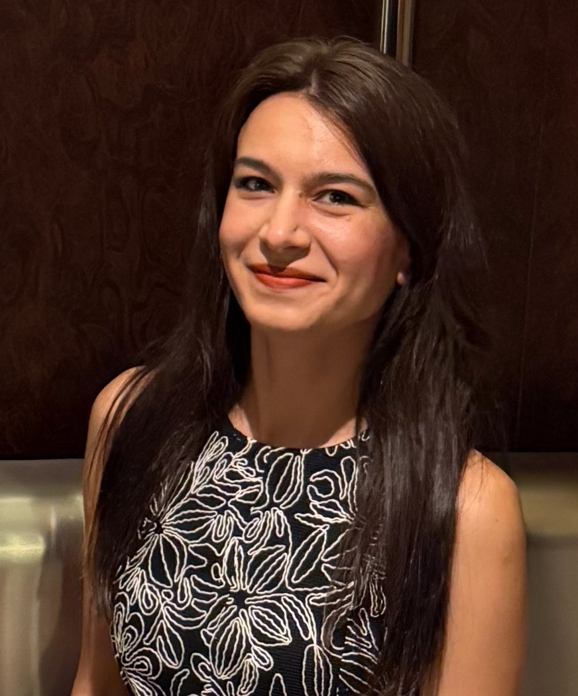

Ayşe Ege Akar
Science educator & biotechnology graduate transitioning into
health-focused software development.
Skills
Python
SQL
Data Analysis
Health & Laboratory Data
Projects
-
Health Data Analysis (Python & SQL)
Analyzing laboratory-style health datasets using Python and SQL.
Currently in development
View on GitHub
-
Biotechnology Data Exploration
Exploratory data analysis on biotechnology-related datasets with a
focus on healthcare applications.
Currently in development
View on GitHub
-
Health SQL Analysis
SQL-based analysis of healthcare data focusing on risk identification
and meaningful insights.
Currently in development
View on GitHub
Skills
- Programming: Python, SQL
- Data & Analysis: Pandas, Data Analysis, Data Visualization
- Domain Knowledge: Healthcare, Biotechnology
#projects ul,
#skills ul {
list-style: none;
padding-left: 0;
}
#projects li,
#skills li {
margin-bottom: 1rem;
}
Contact
GitHub
LinkedIn
Blog – Science & Data Notes